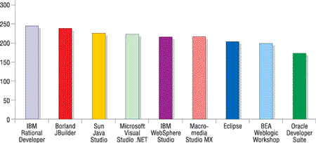

По разным оценкам, сегодня в мире насчитывается от 10 до 20 млн разработчиков ПО, которых мы по старинке часто называем программистами. С учетом "любителей", для которых средства разработки не есть инструмент прямого зарабатывания денег (включая студентов и научных сотрудников), это число, наверное, увеличится в полтора-два раза. Итог получается весьма впечатляющим, хотя на фоне общего количества компьютерных пользователей их доля составляет не более 5-8%. Правда, это как раз тот случай, когда "мал золотник, да дорог", - роль программистов на ИТ-рынке исключительно велика, именно поэтому сотрудничеству с ними уделяют особое внимание все ведущие поставщики платформенных технологий (не только софтверных, и самый яркий пример тут - Intel).
В последние годы мы можем наблюдать драматические события на рынке средств разработки, которые обусловлены несколькими тенденциями.
Первая из них - это исчезновение рынка средств разработки. Точнее, рынок остался, но совсем не тот, каким он был десять и более лет назад. Точнее будет сказать, что существенно сократилась коммерческая составляющая данного сегмента - инструменты из самостоятельных коммерческих продуктов превращаются в средства поддержки тех или иных платформ. В результате основными поставщиками инструментов стали компании, основной бизнес которых - платформенное ПО (IBM, Microsoft, Sun, BEA Systems и т. п.). Отсюда следует серьезная коррекция ценовой политики на продукты для разработки. В принципе все эти компании могут себе позволить даже бесплатное распространение инструментов, что вполне реально компенсировать доходами от продаж платформ. Правда, до такого дело еще не дошло, но почти все вендоры имеют в своем арсенале и бесплатные средства для массового пользователя.
Вторая тенденция - разделение платформенных технологий на два лагеря: Microsoft .NET и Java/open source. Каждый из них использует собственную бизнес-модель: в первом случае речь идет фактически о монопродукте Visual Studio, во втором имеется достаточно широкий спектр инструментов, конкурирующих, в том числе и друг с другом. Конечно, для борьбы с "внешним врагом" Java-средства неминуемо должны как-то объединяться, что мы и видим на примере проектов Eclipse и NetBeans. Однако такая интеграция идет на пользу прежде всего поставщикам платформенного ПО, а тем, кто специализируется именно на инструментах, приходится нелегко (что мы видим на примере Borland).
И наконец, третий важный момент - переход к рассмотрению собственно процесса разработки ПО как одного из этапов управления жизненным циклом приложений (Application Lifecycle Management, ALM). Именно поэтому, если ранее понятие инструмента почти полностью ассоциировалось с интегрированной средой разработки (Integrated Development Environment, IDE), включающей редактор кода, компилятор, компоновщик и отладчик, то теперь мы чаще говорим об инструментальной системе, в состав которой входят средства поддержки групповой работы, управления требованиями, тестирования и т. д.
Тем не менее IDE по-прежнему остается ключевым инструментом, поскольку именно на нее приходится основной объем работы по созданию ПО, а самое главное - именно вокруг нее чаще всего строится вся ALM-система. Но какие же IDE пользуются популярностью на рынке, в чем сильные и слабые стороны тех или иных продуктов?
Borland решила распрощаться с направлением IDE?Одним из самых громких событий на рынке средств разработки в нынешнем году стало объявление корпорации Borland (сделанное 8 февраля) о ее намерении полностью сосредоточиться на бизнесе средств управления жизненным циклом приложений (Application Lifecycle Management, ALM), отказавшись от направления интегрированных сред разработки (Integrated Development Environment, IDE), связанного с такими известными инструментами, как Borland Developer Studio (Delphi, C++Builder, C#Builder) и JBuilder. Учитывая, что имя Borland последние 10-15 лет ассоциировалось на ИТ-рынке именно с перечисленными выше IDE-продуктами, это сообщение можно смело отнести к разряду сенсационных. Ведь еще совсем недавно, осенью прошлого года, компания представила новый набор Borland Developer Studio 2006, в состав которого вошли Delphi 2006, C++Builder 2006 и C#Builder 2006. При этом ее руководство весьма оптимистично высказывалось в отношении рыночных перспектив продукта. И вот спустя всего три месяца прозвучали совсем иные слова… Драматическое решение компании ее новый президент и исполнительный директор Тод Нильсен (он сменил Дейла Фуллера на этом посту летом прошлого года) объяснил следующим образом: "Разработчики всегда будут играть важную роль во всем жизненном цикле ПО, однако рынки средств управления жизненным циклом продуктов и интегрированных сред разработки существенно различаются и требуют разных бизнес-моделей, разных организационных и маркетинговых структур, отдельных исследовательских и программистских групп. Оба рынка важны, но Borland больше не может уделять требуемое внимание обоим направлениям. Поэтому мы, действуя исключительно в интересах ИТ-сообщества, приняли решение полностью сосредоточиться на развитии ALM-продуктов". За этими словами скрываются несколько важных моментов. Прежде всего нужно отметить, что представители Borland лукавят, представляя ALM и IDE как два чуть ли не совершенно различных направления разработки ПО (разные группы потребителей, разные каналы продвижения и т. д.). На самом деле IDE - важнейший компонент ALM-платформы; более того, в условиях развития методов визуального моделирования и проектирования ПО роль IDE как средства кодирования постоянно растет. В то же время пользователи ALM-инструментов - это отнюдь не только ИТ-менеджеры (как порой представляется), а наоборот, довольно широкий круг участников процесса создания ПО (аналитики, проектировщики, кодировщики, тестеры, администраторы). Суть же проблемы, по-видимому, в том, что рынок IDE за последние годы по большому счету практически прекратил свое существование. Произошло это под давлением двух противоборствующих лагерей: Visual Studio, который вытеснил конкурентов с поля .NET, и Eclipse, который предоставил бесплатную и очень мощную среду разработки для мира open source. Компания Borland не смогла усидеть на трех стульях, участвуя в развитии проекта Eclipse, создавая средства для .NET и поддерживая собственную IDE. В этих условиях Borland пока так и не сумела преодолеть многолетний внутренний экономический кризис: финансовые итоги ее деятельности за 2005 г. были особенно неутешительны. Общий годовой доход компании снизился с 310 млн долл. (2004 г.) до 277 млн, при этом падение объема продаж лицензий (где доля IDE довольно значительна) было весьма ощутимым - с 214 до 163 млн долл. (остальные доходы компании приносят услуги, и они-то как раз возросли). Последний год был закончен с убытками в 33 млн долл. (в показателях чистой прибыли). И это в период подъема мирового ИТ-рынка! Какого же развития событий ожидать дальше? Из официальной информации это не совсем понятно, тем более что речь идет о намерениях компании, а не о свершившихся фактах. Кроме того, для ИТ-рынка достаточно необычно, что компания заранее объявляет о намерении продать часть своего бизнеса (как правило, сообщается об уже состоявшихся сделках). Для поиска покупателя своих IDE-активов Borland привлекла фирму Bear, Stearns & Co, но западные комментаторы высказывают сомнение, что поставленная задача имеет простое и быстрое решение. Довольно двусмысленно звучит и такая фраза Тода Нильсена: "Мы намерены организовать отдельный бизнес, ориентированный на индивидуальных разработчиков". По мнению некоторых независимых аналитиков, речь идет скорее всего не о продаже IDE-бизнеса Borland какому-то уже действующему ИТ-игроку, а о привлечении венчурного капитала, который выкупит этот бизнес и профинансирует его развитие. Более того, вполне вероятно, что у компании уже есть несколько предложений, и она будет выбирать между ними в соответствии с некоторыми формальными процедурами (тогда становится понятным сам факт публичного объявления о планах продажи). В то же время в комментариях представителей Borland подчеркивается, что под IDE-бизнесом подразумеваются как сами средства разработки в полном составе, так и связанные с ними человеческие и иные ресурсы. При этом, судя по всему, Borland намерена и дальше поддерживать средства Java-разработки, но на основе среды Eclipse (последние сведения на эту тему можно найти в статье А. Ивановой "Технологии и организация процесса разработки приложений" в данном номере журнала.) Так или иначе, но Borland продолжает расширять функционал своей ALM-платформы, в том числе приобретая игроков этого рынка. Год назад она усилила консалтинговое направление, купив TeraQuest Metrics, сотрудникам которой принадлежит авторство CMMI (Capability Maturity Model Integration), известной модели оценки эффективности разработки ПО. В октябре прошлого года в состав Borland вошла фирма Legadero, поставщик решений для управления ИТ-проектами. В нынешнем феврале объявлено о приобретении Segue Software, создателя программных средств в области контроля качества и тестирования ПО; объем этой сделки оценивается примерно в 100 млн долл., причем она будет оплачена наличными. Общая тональность комментариев зарубежных экспертов по поводу намерения Borland сконцентрироваться на ALM-направлении выглядит примерно так: впереди у компании ожесточенная конкурентная борьба на ALM-поле с такими гигантами, как IBM, Microsoft, CA, но Borland - это брэнд, в будущее которого верят многие ИТ-профессионалы. |
Что думают разработчики о своих инструментах
Поиску ответов на эти вопросы было посвящено исследование Enterprise and SMB Development Surveys 2005 Fall, проведенное в США аналитической компанией Evans Data (http://www.evansdata.com) в конце 2005 г. В его рамках были опрошены почти 800 профессиональных разработчиков, которые должны были оценить возможности десяти наиболее часто используемых IDE.
Первый вопрос должен был определить популярность разных сред разработки: респондентов просили назвать инструменты, которыми они пользуются, при этом можно было указать несколько продуктов (в среднем, как видно из табл. 1, каждый разработчик назвал два инструмента, точнее, 1,98). То, что пакет Visual Studio занял первое место в этом списке, - результат вполне ожидаемый, но при этом стоит отметить, что по сумме представители .NET (два продукта, 29,2%) уступают лагерю Java (семь инструментов, 36,9%) даже без учета группы "Прочие", где .NET, скорее всего, не присутствует.
Далее были отобраны девять средств (NetBeans был объединен в исследовании с Sun Java Studio), для которых оценивались 13 ключевых функций, имеющихся во всех основных IDE. По каждому пункту участники давали оценки ("отлично", "очень хорошо", "достаточно", "требует улучшения", "нет ответа"), которые потом обрабатывались и приводились к обобщенным числовым значениям в виде математической значимости опытных данных. Вот что получилось в результате.
Таблица 1. Наиболее популярные IDE
| Инструмент | Число упоминаний | Доля ответов, % | |
| От числа респондентов | от общего числа ответов | ||
| Microsoft Visual Studio .NET | 411 | 53,0 | 26,8 |
| Eclipse | 195 | 25,2 | 12,7 |
| Macromedia Studio MX | 116 | 15,0 | 7,6 |
| Oracle Developer Suite | 108 | 14,1 | 7,1 |
| Borland JBuilder | 78 | 10,1 | 5,1 |
| IBM WebSphere Studio | 67 | 8,6 | 4,4 |
| Sun Java Studio | 67 | 8,6 | 4,4 |
| IBM Rational Developer | 59 | 7,6 | 3,9 |
| NetBeans | 51 | 6.6 | 3,3 |
| BEA Weblogic Workshop | 47 | 6,1 | 3,1 |
| Sun Studio (C/C++/Fortran) | 41 | 5,3 | 2,7 |
| Borland C#Builder | 36 | 4,6 | 2,4 |
| CodeWarrior | 29 | 3,7 | 1,9 |
| Прочие | 226 | 29,2 | 14,8 |
| Общее число (775 респондентов) | 1531 | 197,7 | 100 |
1. Транслятор (компилятор и/или интерпретатор)
Лидеры: Borland JBuilder - 228, Microsoft VS.NET - 215, Eclipse - 211
Это, безусловно, главный компонент IDE, ради которого и создается собственно инструмент. Borland тут подтвердила свое историческое лидерство в области средств разработки, хотя и соперники отстали совсем ненамного. На последнем месте оказался пакет Oracle Developer Suite (165 баллов), однако в последнее время Oracle стала уделять заметно больше внимания своим средствам разработки (в том числе купив несколько компаний-разработчиков инструментов), так что ситуация тут может вскоре исправиться.
2. Отладчик
Лидеры: Borland JBuilder - 207, Microsoft VS.NET - 202, IBM Websphere Studio - 189
Отладчик уже давно стал обязательным атрибутом интегрированных сред разработки. Обычно его возможности ограничиваются анализом исполнения программ на уровне исходного кода. Группа лидеров тут примерно та же (учитывая, что IBM - родоначальник проекта Eclipse), на последнем месте - Macromedia Studio MX (122).
3. Редактор
Лидеры: Macromedia Studio MX - 216, Microsoft VS.NET - 210, Eclipse - 194
Редактор играет главную роль в деле повышения производительности труда разработчика, именно в его среде большую часть времени работает программист в процессе написания приложений. Интеллектуальные функции редактора позволяют реализовать в нем средства помощи и отладчика. Macromedia исторически делала акцент на Web-разработку и потому изначально особое внимание уделяла именно качеству редактора. А вот Oracle опять оказалась в конце списка с 150 баллами.
4. Создание исполняемого модуля
Лидеры: IBM Rational Developer - 202, Borland JBuilder - 199, Sun Java Studio - 191
Эта функция включает две операции - компиляцию исходного кода и компоновку (подключение всех дополнительных программных компонентов) исполняемого модуля. Возможно, лидерство Rational объясняется как раз тем, что эта компания в свое время ориентировалась на использование библиотек функций от самого широкого круга поставщиков. А последнее место Macromedia (145), наверное, отражает тот факт, что компоновка была далеко не самым главным этапом работы над HTML-проектами.
5. Справка/документация
Лидеры: Macromedia Studio MX - 180, BEA Weblogic Workshop - 172, IBM Rational Developer-171
Возможно, лидерство Macromedia отражает тот факт, что справочная система играет особую роль в Web-разработке - в данной области развитие языка и средств программирования происходит очень быстро, а занимаются этим зачастую люди, не имеющие большого опыта разработки.
6. Профайлер/оптимизатор
Лидеры: Borland JBuilder - 183, IBM Rational Developer - 173, Sun Java Studio - 161.
Эти средства нужны для определения узких мест в программном коде с точки зрения его производительности. Раньше они применялись только довольно узким кругом профессиональных разработчиков в виде автономных инструментов, но сейчас все чаще включаются в состав IDE. Лидерство Borland, IBM/Rational и Sun показывает, что их средства ориентированы на профессионалов высокого уровня. Соответственно неудивительно, что замыкают список самые массовые инструменты - Visual Studio (101) и Eclipse (63).
7. Средства моделирования и проектирования
Лидеры: IBM Rational Developer - 187, Macromedia Studio MX - 178, Sun Java Studio - 169
Здесь ситуация примерно такая же, как с профайлером. Долгие годы Rational была явным лидером в области применения UML (который, собственно, и придумали ее сотрудники) для разработки приложений. Визуальное проектирование изначально широко применялось и в Web-дизайне. Опять-таки, последние места Visual Studio (82) и Eclipse (55) объясняются тем, что на массовом уровне данные средства пока не слишком востребованы. Но ситуация тут очень быстро меняется, и если взять последние версии этих пакетов, они окажутся гораздо ближе к лидерам.
8. Примеры приложений
Лидеры: IBM Rational Developer - 168, Sun Java Studio - 158, Borland JBuilder -155
Наверное, такие примеры следовало бы отнести к разделу документации, но нужно иметь в виду, что они зачастую служат не только для изучения приемов программирования, но и в качестве повторно используемых готовых модулей.
9. Библиотеки и наборы функций
Лидеры: Microsoft VS.NET - 192, IBM Rational Developer - 189, IBM Websphere Studio - 177
Ключевой элемент современной разработки ПО - наличие набора базовых готовых компонентов, из которых создается приложение (то, что сегодня входит в понятие Framework и пока не имеет устоявшегося названия на русском языке). Приоритет тут заслуженно получила Microsoft, создавшая в свое время знаменитый набор Microsoft Foundation Classes (MFC), который в какой-то мере послужил прообразом сегодняшнего .NET Framework.
10. Производительность компилятора
Лидеры: Borland JBuilder - 196, Microsoft VS.NET - 184, IBM Rational Developer - 182
Скорость компиляции очень важна при отладке больших приложений, так как при отладке программ в интерактивном режиме каждый раз происходит трансляция исходного кода в исполняемый вид. Тут эффект достигается двумя основными способами. Первый - это перекомпиляция только тех программных модулей, которые изменились с момента предыдущего запуска (но при широком использовании методов интерпретации в современных IDE выделить такие модули не очень просто!). Второй - использование разных уровней оптимизации результирующего кода (в режиме отладки - минимальная оптимизация, но быстрая компиляция, в режиме создания окончательного варианта приложения - высший уровень оптимизации, но с большими временными затратами).
11. Производительность результирующего приложения
Лидеры: Borland JBuilder - 195, Sun Java Studio - 187, Microsoft VS.NET - 186
Как нетрудно понять, эта характеристика непосредственно связана с возможностями компилятора, хотя очень большое значение имеет также скорость исполнения подключаемых компонентов.
Обычно оптимизационные функции компилятора нацелены на повышение производительности исполняемого кода приложения за счет удаления из него различных конструкций, необходимых для отладки или для контроля за допустимостью значений переменных программы. Реже (это гораздо сложнее!) сюда входит выбор оптимальных алгоритмов.
12. Простота использования
Лидеры: Macromedia Studio MX-195, Microsoft VS.NET - 187, Borland JBuilder - 171
Интегрированные средства разработки уже давно превратились в многокомпонентные системы с достаточно сложным пользовательским интерфейсом. Управление собственно средой такого инструмента, возможности применения различного рода настроек и автоматизации часто используемых операций - это отдельное направление развития IDE. Лидерство Macromedia и Microsoft тут вполне понятно, так как эти компании уделяют много внимания привлечению новых пользователей своих средств.
13. Возможность подключения средств третьих фирм
Лидеры: Eclipse - 204, IBM Rational Developer-184, Microsoft VS.NET - 146
Актуальность этого пункта для современных разработчиков не нуждается в особых комментариях. Первое место Eclipse объяснить довольно легко - эта среда изначально создавалась под возможность расширения. Microsoft также уделяет большое внимание возможностям расширения Visual Studio, но это можно делать только по "микрософтовским" правилам, чем, вероятно, и объясняется большое отставание от лидера. Ну а последнее место Oracle Developer Suite отражает тот факт, что этот инструмент строился как самодостаточное средство.
Общая оценка
Интегральная оценка качества средств разработки, полученная в результате проведенного исследования, приведена на рисунке. В тройку лидеров вошли IBM Rational Developer (256 баллов), Borland JBuilder (249), Sun Java Studio (236). То, что первые два места принадлежат Rational и Borland, объясняется довольно просто - только они из компаний, участвовавших в опросе, специализируются именно на средствах разработки.
|  | Общая оценка качества интегрированных средств разработки ПО. Источник: Evans Data, исследование Enterprise and SMB Development Surveys 2005 Fall.
|
Rational всегда ориентировалась на разработку сложных программных проектов корпоративного уровня (чем и оказалась привлекательна для IBM). Продукт Rational Application Developer победил в трех номинациях - "Средства моделирования и проектирования", "Примеры приложений" и "Создание исполняемого модуля".
Borland, в свою очередь, всегда фокусировалась на создании производительных компиляторов, так что пять первых мест JBuilder как раз в этих позициях совсем не случайны. Правда, тот факт, что Borland намерена продать на сторону свой IDE-бизнес, говорит о том, что высокие качества продукта еще не гарантируют ему рыночного успеха. Кстати, возможно, корпорации Oracle было бы неплохо прикупить эти технологии Borland, так как ее Developer Suite IDE получила не очень лестные оценки от собственных пользователей.
В заключение хотелось бы представить еще один вариант интерпретации результатов исследования Evans Data. В табл. 2 все 13 оцениваемых функций ранжированы по среднеарифметическому показателю первого и последнего места. В какой-то степени именно эта характеристика (еще лучше - с учетом разброса величин) отражает внимание, уделяемое производителем IDE той или иной функции инструмента, а как следствие - и уровень востребованности этих средств у пользователей.
Таблица 2. Рейтинг функций IDE с учетом оценок респондентов
| Позиция в рейтинге |
Функция IDE | Оценка респондентов | ||
| средняя | максимальная/ минимальная |
разброс значений | ||
| 1 | Компилятор/интерпретатор | 197 | 228/165 | 63 |
| 2 | Редактор | 183 | 216/150 | 66 |
| 3 | Производительность результирующего приложения | 174 | 195/153 | 42 |
| 4 | Создание исполняемого модуля | 174 | 202/145 | 57 |
| 5 | Отладчик | 165 | 207/122 | 85 |
| 6 | Производительность компилятора | 164 | 196/132 | 54 |
| 7 | Простота использования | 159 | 195/122 | 73 |
| 8 | Библиотеки и наборы функций | 156 | 192/120 | 72 |
| 9 | Справка/документация | 153 | 180/125 | 55 |
| 10 | Возможность подключения средств третьих фирм | 133 | 204/61 | 143 |
| 11 | Профайлер/оптимизатор | 123 | 183/63 | 120 |
| 12 | Примеры приложений | 122 | 168/75 | 93 |
| 13 | Средства моделирования и проектирования | 121 | 187/55 | 132 |
И еще одно важное замечание: любые опросы пользователей и формируемые на их основе рейтинги весьма условны и скорее просто дают пищу для размышлений как создателям инструментов, так и их пользователям. Впрочем, для разработчиков ПО решающий момент - это выбор базовой платформы (например, .NET или Java), а уже потом - того или иного инструмента. Правда, в случае .NET никакого выбора уже и не остается. С другой стороны, и Java вместе с проектом Eclipse, похоже, движется в том же направлении.
IBM расширяет поддержку сообщества EclipseВ конце марта в Санта-Кларе (шт. Калифорния, США) прошла ежегодная конференция EclipseCon 2006, посвященная дальнейшим планам деятельности фонда Eclipse Foundation (http://www.eclipse.org), в который сегодня входит почти 600 комитетов и групп. Напомним, что четыре с половиной года назад компания IBM выступила инициатором проекта с открытым исходным кодом Eclipse, в который вложила свои технологии на сумму 40 млн долл. В 2004 г. его реализация была передана под управление независимой некоммерческой организации Eclipse Foundation. Хотя формально IBM - лишь один из 130 членов сообщества Eclipse, корпорация, безусловно, продолжает играть ведущую роль в его деятельности.
Система Eclipse, хотя и создавалась изначально как среда разработки для Java, давно уже вышла за эти границы. Сегодня фонд ведет более 60 различных проектов; исследования проводятся в рамках идей open source по семи основным направлениям: средства разработки приложений масштаба предприятий, встроенные решения, SOA (сервис-ориентированная архитектура), управление жизненным циклом приложений, насыщенные Интернет-приложения, платформа многофункционального клиента и базовые среды поддержки приложений. Важно отметить, что компании могут использовать эти технологии как основу для своих коммерческих продуктов. На прошедшей конференции IBM выступила с целым рядом инициатив и шагов, направленных на поддержку проекта Eclipse в целом и специалистов, использующих его технологии. Так, корпорация объявила о пилотном предложении, касающемся поддержки разработчиков, использующих Eclipse в качестве основной среды разработки. Эта программа распространяется и на собственно среду Eclipse с открытым исходным кодом, и на коммерческие инструментальные средства на базе Eclipse, такие, как IBM Rational. Специалисты IBM будут помогать программистам осваивать смешанную среду разработки ПО и обеспечат методическую поддержку руководителей групп разработчиков. На EclipseCon была также представлена международная инициатива IBM Eclipse Innovation Award 2006, которая призвана стимулировать использование в университетах инструментальных средств на базе открытого исходного кода и открытых стандартов в учебном процессе и при проведении исследований. Размер грантов, выделяемых по этой программе, составляет от 10 до 30 тыс. долл. (http://www.ibm.com/university/eclipseinnovation). Совместно с компанией Zend корпорация IBM передала программный код расширяемой среды PHP Integrated Development Environment в недавно начатый в рамках проекта Eclipse Tools подпроект PHP IDE. Эта система, использующая, в свою очередь, технологии проекта Eclipse Web Tools, включает расширяемый набор функциональных возможностей, охватывающих весь жизненный цикл создания PHP-приложений - разработку, развертывание, документирование, отладку и тестирование. В проект Eclipse Test & Performance Tools Platform корпорация отдает инструменты Web Services Distributed Management (WSDM), Application Response Measurement (ARM) и Java Management Extensions (JMX). Теперь эти средства смогут работать в любой среде Eclipse Workbench, включающей платформу Test & Performance Tools Platform, например, в среде IBM Rational Application Developer. На EclipseCon 2006 стало также известно об утверждении руководством Eclipse Foundation недавней передачи корпорацией инструментария Ajax Toolkit Framework для создания и отладки Ajax-приложений. В настоящее время IBM готовит передачу сообществу проекта Core Framework for SOA Tools Project (STP), предоставляющего базовые модели и среду для разработки других подпроектов STP. Базовая структура STP основывается на архитектуре Service Component Architecture - новом стандарте, поддерживаемом многими ведущими отраслевыми поставщиками инструментов и сред исполнения для решений SOA. Модели и среды STP предоставляют основу для создания инструментов проектирования и разработки Rational, таких, как Rational Application Developer и Rational System Architect. IBM и Borland предложили создать в рамках Eclipse новое направление под названием Eclipse Modeling Project для разработки технологий моделирования. Еще одна новая инициатива - Eclipse Project Higgins - предоставит индивидуальным пользователям более высокий уровень контроля над своей персональной онлайновой информацией, такой, как банковские счета, номера кредитных карт и медицинские сведения. В ней принимают участие IBM, беркмановский центр "Интернет и общество" при Гарвардской юридической школе, Novell и Parity Communications, которые работают над ПО для управления идентификационной информацией, ориентированным на пользователей.
Кроме того, IBM объявила о передаче в проект Eclipse Voice Tools своего нового API, чтобы Web-разработчики могли использовать возможности популярных браузеров для создания, тестирования и выполнения новых голосовых приложений, ускоряя тем самым распространение приложений VoiceXML в мобильных телефонах, карманных ПК, в автомобилях и в Интернете. IBM также разместила на сайте alphaWorks свои инструменты разработки для Eclipse, позволяющие создавать мультимодальные голосовые Web-приложения с использованием языка разметки XHTML+Voice (X+V). Эти голосовые приложения функционируют под управлением IBM WebSphere Voice Server. Впрочем, нужно отметить, что и сама IBM активно использует технологии Eclipse в своих коммерческих продуктах. Они включены в инструментарий для моделирования и интеграции корпоративных данных Rational Data Architect, в средство для создания электронных форм Workplace Forms Designer 2.6, в новый подключаемый модуль для разработки интерфейса "мгновенной" помощи. Технология Eclipse Modeling станет базовой методикой для создания коммерческих средств моделирования Rational (таких, как Rational Software Modeller), новая версия ПО IBM Rational ClearQuest будет использовать платформу Eclipse Rich Client. Кроме того, IBM планирует в следующем году включить технологию Higgins в коммерческое ПО Tivoli для управления идентификационными данными. Эту технологию будут также поддерживать независимые программисты и консалтинговая служба IBM. |